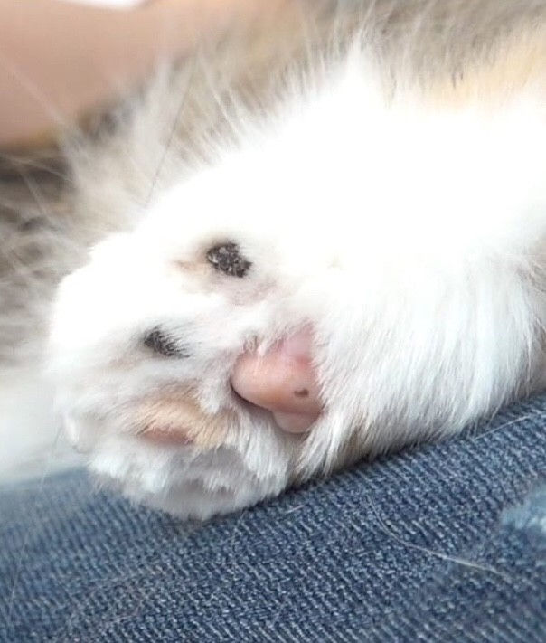
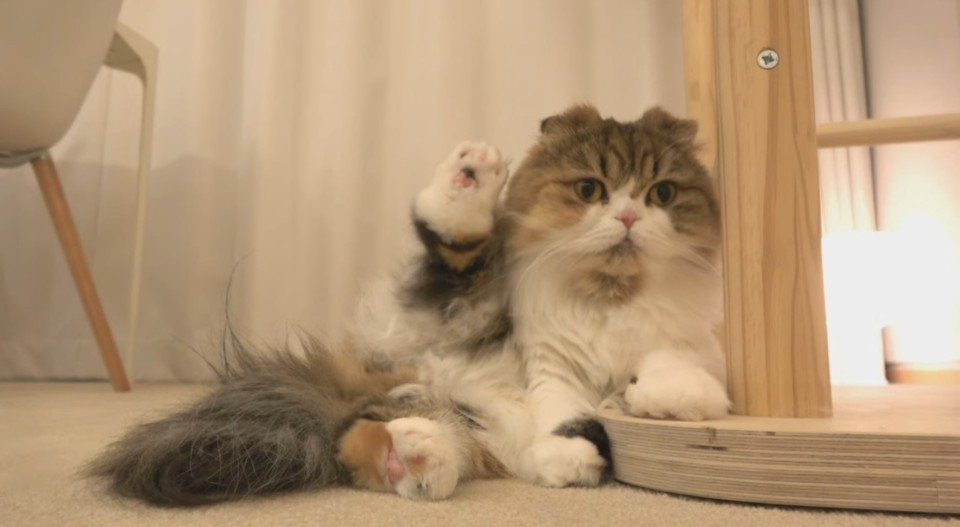
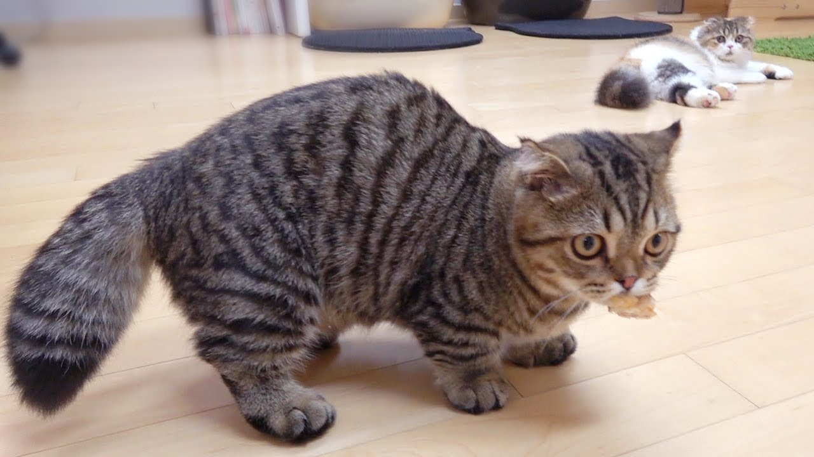

판매 품목
- 츄츄네 사탕
- 가루네 과자
- 루루의 꼬리
3가지 맛이 들어가있는 츄츄네 발바닥사탕
츄츄는 엄마 껌딱지.
츄츄의 배를 만져보세요. 껴앉고 자세요. 한시도 떨어지지않습니다.


달고 맛있는 가루네 떡볶이
가루네 떡볶이는 국내산 100% 가루로 만들어서
달고 맛있습니다.
국내산 가루네 떡볶이를 드세요. 가루는 몸에 좋고 베란다에 가둬서 차갑게 먹으면
더 맛있게 드실수있습니다.
가루의 효능
- 귀엽다
- 배긁기 좋다
- 가끔 거위 성대모사도 함
- 삑삑 소리가 남
- 털이 자라면 색이 변해서 자연스럽게 털관리 가능
집에서 손수 키운 가루
가루를 직접 키운 명인
두껍고 가성비 좋은 루루의 꼬리
비록 혼합 비율을 잘못섞어 생긴 불량품이지만 개성이 있습니다.
건강에는 무해합니다! 상추처럼 잎사귀만 따듯 꼬리만 계속 자르셔도 괜찮습니다
무한으로 즐길수 있으니까요.
